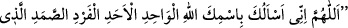
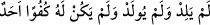
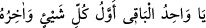
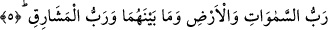
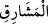

ismini bin kere okursa bütün yaratıklar kalbinden çıkar. Yaratılmışların korku ve
endişesinden halas olur. Zaten mahlûkat sevgi ve korkusu hem dünyada hem de ahirette
bütün bela ve musibetlerin aslı ve kaynağıdır. Hz. Peygamber (s.a.) bir adamın:
Allahım! Senin Allah, vahid, ehad, ferd, samed isminle senden istiyorum. Öyle ki o
Allah doğurmamış, doğmamış ve onun hiçbir dengi yoktur” diye dua ettiğini işitti ve
“Allah’tan O’nun ism-i azam’ı ile iste ki bununla dua edilince Allah o duaya icabet
eder ve bu dua ile istenileni verir” buyurdu.[199]
el-Erbeûne’l-İdrisiyye’de “
” yani “Ey tek ve bâkî olan, her
şeyin evveli ve sonu olan Allahım!” şeklinde dua vardır. Sühreverdî der ki, bayağı ve
karışık fikirlerin etkisinde kalan kimse “el-Vâhid” ismini zikrederse bu durum
kendisinden zâil olur. Zâlim sultandan korkan kimse “el-Vâhid” ismini öğle namazından
sonra 500 kere okursa onun şerrinden emin olur; dert ve tasadan kurtulur; düşmanları
onu dost edinirler.
5. O, hem göklerin, yerin ve ikisi arasındakilerin Rabbi, hem de doğuların
Rabbidir.
“O, hem göklerin, yerin ve ikisi arasındakilerin” ikisi arasında mevcut olanların
“Rabbi”, mâliki, mürebbisi ve onları kemâlâta ulaştırandır; “hem de doğuların”,
güneşin doğularının “Rabbidir.”
Bunlar, 360 doğudur. Güneş her gün bunların birinden doğar. Batılar da buna göre
değişiklik arzeder. Bundan dolayı yalnız doğuların zikriyle yetinilmiştir. Yani 360 doğu
olunca tabiatıyla 360 da batı olacaktır. Güneş her gün bunların birinden batar. Allah
Teâlâ’nın “(O,) iki doğunun ve iki batının Rabbidir.” (er-Rahman 55/17) âyetindeki
iki doğu ve iki batı, yaz ve kış mevsimlerinin doğuları ve batılarıdır. Yine Allah
Teâlâ’nın “O, doğunun da batının da Rabbidir. O’ndan başka ilâh yoktur. Öyleyse
yalnız O’nun himayesine sığın.” (el-Müzzemmil 73/9) âyetinde ise Allah Teâlâ cihet
ve yönü murad etmiştir. Buna göre doğu bir yön batı da bir yöndür.
“Rab” kelimesinin “
” kelimesinde tekrar edilmesi, yukarıda zikredildiği gibi
doğularda rubûbiyet eserlerinin son derece belirgin olması ve her gün yenilenmesi
nedeniyledir. Hülasa, Allah Teâlâ bütün mevcûdat ve âlemlerin rabbidir ve O’nun rab
oluşu li-zâtihîdir, yani kendi zâtı ve varlığı itibariyledir. Yoksa kendi zâtına yönelik bir
menfaat söz konusu değildir. Halkın terbiye etmesi böyle değildir; bir menfaate
yöneliktir. Rubûbiyet genel olarak mâlik ve yaratıcı olma gibi mânâlara gelir. Özel